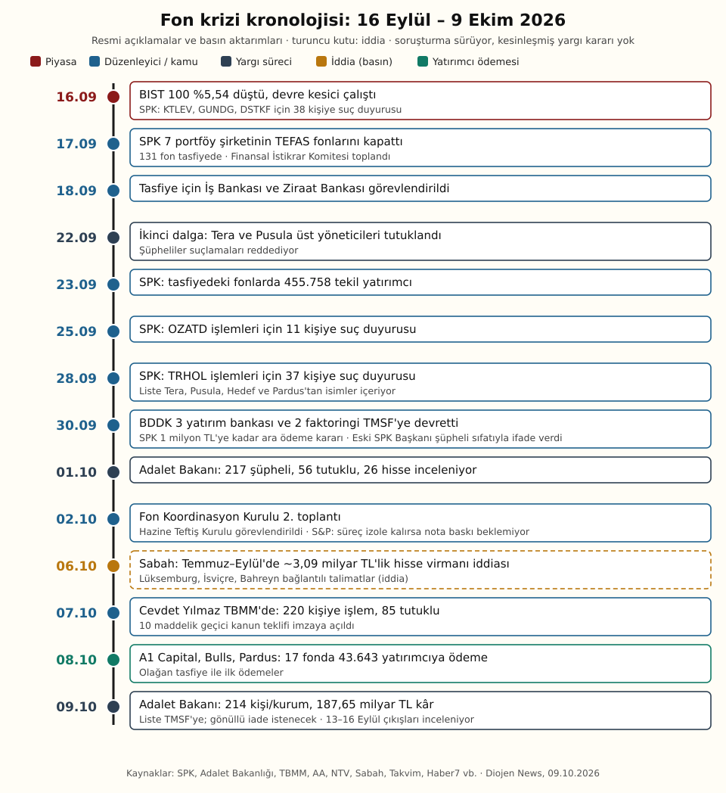
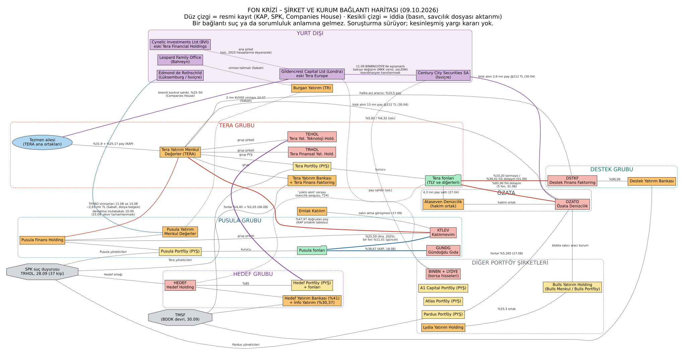

Dosya: Fon krizinde 23 gün — 131 fon, 455 bin yatırımcı ve yanıt bekleyen sorular
16 Eylül'de borsadaki sert düşüşle görünür hale gelen fon krizi, üç haftada 220 kişiyi kapsayan bir ceza soruşturmasına, yedi portföy yönetim şirketinin 131 fonunun tasfiyesine ve yeni bir yasa teklifine dönüştü. Bu dosya, resmi kayıtlarla doğrulanabilen bilgileri basına yansıyan iddialardan ayırarak krizin kronolojisini, aktörlerini, tartışılan mekanizmayı ve açık soruları bir araya getiriyor. Soruşturma sürüyor; adı geçen kişi ve kurumlar hakkında kesinleşmiş bir yargı kararı yok.
Özet: Dosyada neler var?
- Ölçek: SPK'nın 17 Eylül kararıyla Tera, Pusula, Hedef, Atlas, A1 Capital, Pardus ve Bulls portföy şirketlerinin 131 fonu tasfiyeye alındı. Bu fonlarda 455.758 tekil yatırımcı bulunuyor.[1][4]
- Yargı: Cumhurbaşkanı Yardımcısı Cevdet Yılmaz'ın 7 Ekim'de TBMM'de verdiği bilgiye göre 220 kişi hakkında işlem yapıldı, 85 kişi tutuklu, 23 kişi hakkında yakalama kararı, 81 kişi hakkında yurt dışı çıkış yasağı var.[4]
- Son gelişme: Adalet Bakanı Akın Gürlek'in 9 Ekim'de aktardığı bilgilere göre Başsavcılık, Tera, Pusula ve Hedef fonlarından 100 milyon liranın üzerinde kâr eden 214 kişi ve kurumun toplam 187,65 milyar lira kazandığını tespit etti ve listeyi TMSF'ye bildirdi.[2][3]
- Ödemeler: Olağan tasfiyeye giden A1 Capital, Bulls ve Pardus'un 17 fonunda 43.643 yatırımcıya 8 Ekim'de ödeme başladı. Diğer fonlarda 1 milyon liraya kadar ara ödeme, Meclis'e gelecek kanun teklifine bağlı.[4][5]
- Mekanizma: Resmi bildirimler, bazı fonların fiili dolaşımı düşük hisselerde olağanüstü yoğunlaştığını gösteriyor. Örneğin Tera fonları 31 Ağustos'ta Özata Denizcilik'in borsada fiilen dolaşan paylarının yüzde 85,9'unu tutuyordu.[10] Bu yoğunlaşmanın kasıtlı bir manipülasyon olup olmadığı yargı kararıyla belli olacak.
Kronoloji: 16 Eylül – 9 Ekim

Krizin arka planı Eylül'den önceye uzanıyor. Hazine ve Maliye Bakanı Mehmet Şimşek 4 Kasım 2025'te "bazı fonlar üzerinden manipülasyonların yapıldığını biliyoruz" demişti. Medyascope'un TEFAS verilerine dayanan hesabına göre bu 131 fonun o tarihteki büyüklüğü 297 milyar liraydı, Eylül 2026'da 800 milyar lirayı aştı.[24] Başsavcılık soruşturması 19 Ağustos 2026 tarihli bir müzekkereyle başladı.[24] SPK 28 Ağustos'ta yatırım fonu rehberini değiştirerek serbest fonların halka açıklığı düşük şirketlerde taşıyabileceği payı fiili dolaşımın en fazla yüzde 8'i ile sınırladı. Bu kural, fonları ellerindeki büyük hisse bloklarını azaltmaya zorladı.[11]
9 Eylül'de Tera Yatırım, Pusula Finans Holding ve bağlı şirketlerini devralmak için görüşme başlattığını KAP'a bildirdi, ertesi gün temel şartlarda mutabakat açıklandı.[24] 15 Eylül'de Pusula bazı fonlarında iade ödemelerinde temerrüt yaşandığını duyurdu.[11][24] Aynı gün Tera, devrin "henüz hukuken ve fiilen tamamlanmadığını" ve Pusula fonlarının likidite ihtiyaçlarının Tera Grubu ile ilişkilendirilmemesi gerektiğini açıkladı.[8]
Ardından Tera'nın iki fonunda da ödeme sorunu ortaya çıktı.[24] 16 Eylül'de BIST 100 yüzde 5,54 düşüşle 13.122,58 puandan kapandı, devre kesici çalıştı.[1][24] SPK aynı gün KTLEV, GUNDG ve DSTKF paylarındaki işlemler nedeniyle 38 kişi hakkında suç duyurusu kararı aldı.[11] 17 Eylül'de SPK yedi şirketin TEFAS'taki fonlarını işleme kapattı ve tasfiye kararı verdi. Finansal İstikrar Komitesi ise sorunu sınırlı sayıda şirketin kredi ve likidite sorununa bağladı.[1] 18 Eylül'de tasfiye için Tera fonlarında İş Bankası, diğerlerinde Ziraat Bankası görevlendirildi.[1]
Sonraki iki haftada soruşturma dalgalar halinde genişledi. Tera ve Pusula gruplarının üst yöneticileri 22 Eylül'de tutuklandı.[16] SPK 25 Eylül'de Özata Denizcilik (OZATD), 28 Eylül'de Tera Finansal Yatırımlar Holding (TRHOL) işlemleri için sırasıyla 11 ve 37 kişi hakkında suç duyurusunda bulundu.[28][12] 30 Eylül'de BDDK üç yatırım bankası ile iki faktoring şirketinin yönetimini TMSF'ye devretti, SPK 1 milyon liraya kadar ara ödeme kararı aldı.[1] 1 Ekim'de Gürlek, 217 şüpheli, 56 tutuklu ve 26 hissenin incelendiğini açıkladı.[26] 7 Ekim'de Cevdet Yılmaz rakamları 220 kişi ve 85 tutukluya güncelledi.[4] 9 Ekim'de ise 214 kişi ve kurumluk kazanç listesi açıklandı.[2]
Aktörler: Yedi portföy şirketi ve bağlı gruplar
SPK kararına göre tasfiyedeki fonlar yedi portföy yönetim şirketine (PYŞ) ait. Karar gazetesinin yayımladığı dağılıma göre fon sayıları Tera 5, Pusula 12, Hedef 31, Atlas 16, A1 9, Bulls 15 ve Pardus 42. Bu listenin toplamı 130. SPK ve resmi açıklamalar ise 131 fon diyor. Hedef kendi açıklamasında 13 fondan, A1 ise 7 fondan söz ediyor.[11][24]
- Tera grubu: Tera Yatırım Menkul Değerler (TERA), Tera Portföy, Tera Yatırım Bankası, Tera Finans Faktoring ile borsada işlem gören TRHOL ve TEHOL. KAP'taki ortaklık yapısına göre Emre Tezmen yüzde 31,9, babası Oğuz Tezmen yüzde 25,17 paya sahip.[16] Grubun bankası ve faktoring şirketi 30 Eylül'de TMSF'ye devredildi.[1] Tera Portföy, kriz öncesi 13,7 milyar dolarlık varlık yönetiyordu.[11]
- Pusula grubu: Kasım 2025'te kurulan Pusula Finans Holding altında Pusula Portföy, Pusula Yatırım, Katılımevim (KTLEV) ve Birevim bulunuyor. Pusula Portföy 31 Ağustos'ta 633 milyar liranın üzerinde portföy yönetiyordu. Emlak Katılım 17 Eylül'de Katılımevim ve Birevim'i satın almak için görüşme başlattığını açıkladı.[24]
- Hedef grubu: Hedef Holding (HEDEF); Hedef Portföy'ün yüzde 85'ine, İnfo Yatırım'ın yüzde 30,37'sine ve Hedef Yatırım Bankası'nın yüzde 41'ine sahip. Banka TMSF'ye devredildi. Hedef Portföy, tasfiyedeki 13 fonunun 31 milyar liralık büyüklüğünün 29,8 milyar lirasının likit fonlardan oluştuğunu ve temerrüt bulunmadığını açıkladı.[24]
- Destek grubu: Destek Finans Faktoring (DSTKF) ve onun yüzde 99,99 iştiraki Destek Yatırım Bankası. DSTKF'nin Ocak 2025 halka arzında Tera Yatırım yüzde 10,5, bir Tera fonu yüzde 8,04 pay aldı.[24] Banka TMSF'ye devredildi.
- Bulls, Pardus, A1 Capital, Atlas: Bulls Yatırım Holding'in ortakları arasında Lydia Yatırım Holding var. Pardus ve A1 Capital, Güler Yatırım Holding ile ortaklık bağı olan şirketler. Atlas Portföy'ün de fonları tasfiyede.[24] Bu dört şirketten A1 Capital, Bulls ve Pardus olağan tasfiyeye alındı. Atlas için teminat alınması halinde olağan tasfiye planlanıyor.[4]

Düz çizgi: resmi kayıt (KAP, SPK, Companies House)Kesikli çizgi: iddia (basın, savcılık dosyası aktarımı)Çizgi rengi: ilgili grubun rengi (Tera kırmızı, Pusula mavi, Hedef ve yurt dışı mor, Destek yeşil)
Bir bağlantı suç ya da sorumluluk anlamına gelmez. Soruşturma sürüyor; kesinleşmiş yargı kararı yok. Haritada kişi yer almaz.
Haritayı okuma notu: Haritada kişi yerine şirket ve kurumlar gösterildi. Gruplar arasındaki resmi kayıtlı bağlantılar şunlar: Tera Yatırım'ın KTLEV'deki yüzde 47,97'lik doğrudan payı, Tera'nın Pusula'yı devralma mutabakatı, Hedef Portföy fonlarının 6 Ağustos'ta TEHOL'deki payını yüzde 4,40'tan yüzde 5,05'e çıkarması ve SPK'nın TRHOL suç duyurusu listesi.[7][8][9][12] SPK'nın TRHOL kararındaki 37 kişilik listede Tera yöneticilerinin yanı sıra Pusula, Hedef ve Pardus gruplarıyla bağlantılı isimler de bulunuyor. Karar, kişilerin rollerini açıklamıyor.[12]
Mekanizma: Sığ hisselerde yoğunlaşma iddiası
Krizin merkezindeki kavram "fiili dolaşım". Bir şirketin paylarının bir kısmı ana ortakların elinde durur ve piyasada el değiştirmez. Borsada gerçekten alınıp satılabilen kısma fiili dolaşımdaki pay denir. Bu oran düşükse, birkaç fonun yaptığı alımlar fiyatı kolayca yukarı taşıyabilir. Aynı fonlar satmak istediğinde ise karşılarında yeterli alıcı bulamayabilir.[10]
Resmi bildirimlerde bu yoğunlaşmanın boyutu görülüyor:
- Özata Denizcilik (OZATD), yüzde 85,9: Tera Portföy 31 Ağustos'ta KAP'a, yönettiği beş fonun 1,49 milyon OZATD payı sattığını bildirdi. Satış öncesinde bu fonlar şirket sermayesinin yüzde 20,03'ünü, fiili dolaşımdaki payların ise yüzde 95,92'sini tutuyordu. Satıştan sonra oranlar yüzde 17,93 ve yüzde 85,90'a indi. Yani borsada işlem görebilen her 100 OZATD payının yaklaşık 86'sı beş fonun portföyündeydi.[10] Aynı hissede Pardus fonlarının payı 17 Ağustos'ta yüzde 5,265'e çıktı.[10] Tera'nın girişi Nisan'da başladı. 30 Nisan'daki 15,6 milyon paylık toptan satışta 13 milyon pay Tera Yatırım'a, 2,6 milyon pay İsviçre merkezli Century City Securities'e 212 liradan satıldı; işlemin toplam büyüklüğü 3,307 milyar TL. KAP kaydında satıcı aracı kurum Bulls Yatırım görünüyor.[28][14] SPK'nın OZATD kararı, 11 kişinin her birinin hangi işlemi yaptığını ayrıntılı biçimde açıklamıyor.[28]
- Katılımevim (KTLEV), yüzde 47,97: KAP'taki güncel ortaklık tablosunda Tera Yatırım Menkul Değerler, KTLEV sermayesinin yüzde 47,97'siyle en büyük ortak görünüyor. Tabloda ayrıca bir Pusula fonunun yüzde 11,01 payı var. MKK hesaplamasına göre Emre Tezmen'in dolaylı payı yüzde 15,32, Oğuz Tezmen'inki yüzde 12,12. KTLEV'in fiili dolaşım oranı yüzde 26,34.[7] Karar'ın aktardığına göre Pusula fonları Aralık 2025'te KTLEV sermayesinin yüzde 25,59'una ulaşmıştı.[11]
- Gündoğdu Gıda (GUNDG) ve Destek Finans Faktoring (DSTKF): 18 Ağustos tarihli KAP bildirimine göre Pusula fonları GUNDG sermayesinin yüzde 38,67'sini tutuyordu. Tera'nın yedi fonu 1 Eylül itibarıyla DSTKF sermayesinin yüzde 10,20'sine, fiili dolaşımdaki payların ise yüzde 39,41'ine sahipti.[11]
İddia edilen döngü: Basına yansıyan iddialara ve analizlere göre mekanizma şöyle işledi: fonlar bağlantılı şirketlerin sınırlı sayıdaki payını topladı, fiyatlar yükseldi, fonların kâğıt üzerindeki getirisi arttı. Bu getiriyi gören yeni yatırımcıların parasıyla aynı hisselerden yeniden alım yapıldı.[11] Karar'ın aktardığı Financial Times analizinde, bazı fonların bu hisseleri teminat göstererek borçlandığı iddiası da yer alıyor.[11] Medyascope'a göre Tera'nın TLY fonu 2021'den Ağustos 2026'ya 524 kat değer kazandı.[24] SPK da 18 Eylül'de, 2025'in son çeyreğinden itibaren bazı fonların fiili dolaşımı düşük paylarda şirketlerin ekonomik gerçekliğiyle açıklanamayacak fiyat hareketlerine yol açtığını gözlemlediğini açıklamıştı.[10] Bu tespitlerin bir suç oluşturup oluşturmadığına mahkeme karar verecek.
Kırılma: 28 Ağustos'taki limitler satışı zorunlu kıldı. Sığ tahtalarda alıcı bulunamadı, fiyatlar düştü ve çıkışlar hızlandı. Ekonomim'in TEFAS hesabına göre 28 Ağustos'tan sonra fonlardan net çıkış 210 milyar lirayı aştı. Pusula fonlarından yaklaşık 132,7 milyar liralık çıkış talebi geldi.[11]
Para izi iddiaları
Bu bölümdeki bilgiler, basına yansıyan soruşturma belgelerine ve köşe yazılarına dayanıyor. Hiçbiri yargı kararıyla kesinleşmiş değil. İlgili kişilerin bir kısmı iddialara itiraz ediyor.
- Lüksemburg ve İsviçre virmanları (iddia): Sabah'ın 6 Ekim'de dosya belgesine dayandırdığı habere göre, Pusula Portföy YK Başkanı Muhammed Yarız'ın 11 Ağustos'ta Pusula Yatırım'daki hesabından Lüksemburg merkezli Edmond de Rothschild (Europe) SA'daki portföyüne 749.820 THYAO payı (yaklaşık 228,9 milyon TL) aktardığı ileri sürüldü. Pusula Holding YK Başkanı Serdar Turhan'ın da 14 Ağustos'ta aynı kuruluşa 8.852.760 THYAO payı (yaklaşık 2,70 milyar TL) aktardığı ileri sürüldü.[13] Medyascope ise Yarız'ın hesabı ile İsviçre'deki bir Edmond de Rothschild hesabı arasında 1 Eylül'de yaklaşık 2,889 milyar TL'lik transfer olduğunu yazdı. İki haberin rakamları birbirini tutmuyor ve kalem bazında doğrulanamadı.[24]
- Bahreyn bağlantısı (iddia): Aynı habere göre Bahreyn (Manama) merkezli Leopard Family Office'in genel müdürü imzasıyla 24 Temmuz'da verilen talimatla, Pusula Yatırım'dan Burgan Yatırım'a 2 milyon KUYAS payının (yaklaşık 146,4 milyon TL) virmanlandığı belirtildi. Habere göre bir başka şüpheli de 4 Eylül'de 2,9 milyon BTCIM payını Yapı Kredi Yatırım'a aktardı. Sabah'ın hesabına göre dört virmanın toplamı yaklaşık 3,09 milyar TL. Başsavcılık 5 Ekim'de Ocak 2025'ten bu yana tüm virman dökümlerini istedi.[13] Bu virmanların tarihleri, Pusula'nın 15 Eylül'deki temerrüt açıklamasından önceye denk geliyor. Bunun mal kaçırma amacı taşıyıp taşımadığı soruşturmanın konusu.
- İsviçre girişi ve savunma: Sabah'ın yayımladığı ifadeye göre savcılık, 24 Ağustos'ta Edmond de Rothschild Suisse'teki bir hesaptan Turhan'a 25 milyon dolar geldiğini ileri sürdü. Turhan ise yaklaşık 90 milyon dolar geldiğini, bunun kredi teminatı olarak verdiği BIST 30 hisselerinin banka tarafından satılmasından kaynaklandığını ve paranın tamamını kriz döneminde Pusula Portföy'e aktardığını söyledi.[18]
- Gildencrest Capital (Londra): Tera Europe adıyla 2011'de kurulan şirket, 31 Ocak 2024'te Gildencrest Capital adını aldı. Companies House kayıtlarında Emre ve Oğuz Tezmen, 9 Ekim itibarıyla şirkette yüzde 25–50 arası paya sahip "önemli kontrol sahibi kişi" olarak aktif görünüyor.[15] Bloomberg'in aktardığı hesaplara göre şirket 2025'te 12,5 milyon sterlin gelir ve 2,8 milyon sterlin kârla rekor kırdı, hisse işlemlerinden elde ettiği gelir yüzde 283 arttı.[16] Gildencrest, soruşturulan fonlarla ticari ilişkisi olmadığını, FCA denetiminde olduğunu ve kendi hesabına pozisyon tutmadığını açıkladı.[14][16] Sabah yazarı Dilek Güngör'ün, Tezmen'in 26 Ağustos'ta şirketten ayrılmış göründüğü yönündeki iddiası, Companies House'taki güncel kayıtla örtüşmüyor. Güngör'ün, Gildencrest'in "temettü adı altında" Britanya Virjin Adaları'ndaki Cynelic Investments'a (eski adı Tera Financial Holdings) para aktardığı iddiası da doğrulanamadı.[17] soL'un aktardığına göre Gildencrest'in 2025 mali tablolarında ana şirket olarak Cynelic gösteriliyor.[14]
- Century City Securities (İsviçre): soL ve DW Türkçe'nin MKK kayıtlarına dayanan haberine göre 11 Eylül'de BINBN hissesinde Gildencrest'in bakiyesi 1.373.500 pay azalırken Century City'ninki 1.389.601 pay arttı. LYDYE'de de iki şirketin bakiyesi 32.910 pay ters yönde değişti. Haber, bu kayıtların iki şirketin koordineli hareket ettiğini kanıtlamadığını da belirtiyor. Century City, SPK'nın OZATD tedbirleri kapsamında yer almadı.[14]
Adalet Bakanı'nın 9 Ekim açıklaması: 214 kişi ve kurum, 187,65 milyar lira
Gürlek'in Sabah'a yaptığı açıklamalar ve dosya bilgilerine göre Başsavcılık, Tera, Pusula ve Hedef fonlarından 100 milyon liranın üzerinde kazanç sağlayan 141 gerçek kişi ile 73 şirket ve kurumu belirledi. Bu 214 isim toplam 187 milyar 653 milyon lira kâr etti. Gerçek kişilerin kazancı 100,676 milyar lira, tüzel kişilerinki 86,977 milyar lira olarak hesaplandı.[2][3]
Fon bazında dağılım şöyle aktarıldı: Tera fonlarında 102 gerçek kişi yaklaşık 28 milyar, 38 tüzel kişi yaklaşık 62,1 milyar lira. Pusula fonlarında 19 gerçek kişi yaklaşık 69,7 milyar, 20 tüzel kişi yaklaşık 10 milyar lira. Hedef fonlarında 20 gerçek kişi yaklaşık 2,98 milyar, 15 tüzel kişi yaklaşık 14,9 milyar lira.[2] NTV'nin aktarımıyla Gürlek, Tera fonlarından yaklaşık 90, Pusula'dan 79, Hedef'ten yaklaşık 18 milyar lira kâr sağlandığını söyledi. Bu rakamlar, kalemlerin toplamıyla tutarlı.[3]
Liste TMSF'ye bildirildi. TMSF'nin bu kişilere resmi bildirim yaparak tutarların gönüllü iade hesaplarına yatırılmasını isteyeceği ve toplanacak paranın mağdurlar için kullanılacağı belirtildi.[2] Gürlek, soruşturmada yapay zekâ sistemlerinden de destek alındığını ve özellikle 13, 14, 15 ve 16 Eylül'de fonlardan satış yapanların incelendiğini söyledi. Bakan, bu kişilerin "önceden haberli olarak ve kendilerine verilen bilgiler doğrultusunda" çıkış yaptıklarının saptandığını ifade etti.[2] Bu, Bakanlık ve Başsavcılığın değerlendirmesi. Listenin kimlerden oluştuğu açıklanmadı. Listede yer alanların tamamının bu dört günde çıkış yapıp yapmadığı ya da kazancın hangi dönemi kapsadığı da kamuoyuyla paylaşılmadı. 100 milyon lira üzerinde kâr etmek tek başına suç anlamına gelmiyor. Haberli işlem yapıldığı iddiası yargı sürecinde değerlendirilecek.
Düzenleyici ve denetim boyutu
- SPK: 17 Eylül'de fonları kapattı. Tasfiye süresini üç aydan altı aya çıkardı, 30 Eylül'de Tera Yatırım'ın faaliyetlerini geçici olarak durdurdu ve ara ödeme kararı aldı.[1] Kurul, 28 Eylül'deki 2026/66 sayılı bülteninde TRHOL kararıyla 37 kişiye ve Tera'nın iki şirketine TRHOL'da iki yıl işlem yasağı getirdi, 24 kişinin lisansını iptal etti.[12]
- BDDK ve TMSF: BDDK, Tera, Destek ve Hedef yatırım bankaları ile iki faktoring şirketinin yönetimini TMSF'ye devretti. Açıklamaya göre üç bankanın sektör aktiflerindeki payı yüzde 0,22.[1] TMSF bünyesinde gönüllü iade hesapları açıldı; 214 kişilik liste de TMSF'ye bildirildi.[2]
- MASAK: Başsavcılık 17 Eylül'de MASAK'tan Pusula, Tera, Hedef ve Bulls gruplarının yöneticilerinin 2024'ten bu yana yaptığı yurt dışı para ve kripto transferlerini istedi.[22]
- Fon Koordinasyon Kurulu ve ödeme ilkeleri: Yılmaz'ın aktardığı ilkelere göre özel zararlar için Hazine kaynağı kullanılmayacak. Ödemeler fonların kendi varlıklarından, "fahiş veya haksız" kazanç elde edenlerden geri alınacak tutarlardan ve el konulan varlıkların satışından karşılanacak. Öncelik küçük yatırımcılara ve para piyasası fonlarına verilecek. Ara ödemede MKK'nın hesaplayacağı "net yatırım tutarı" esas alınacak, ödeme en fazla 1 milyon lira olacak. Nihai tasfiye için 5-6 ay hedefleniyor.[4]
- Yasa teklifi: AK Parti'nin 10 maddelik geçici kanun teklifi 7 Ekim'de milletvekillerinin imzasına açıldı.[6] Gazete Oksijen'in ANKA'ya dayanan haberine göre teklifin 9 Ekim'de TBMM Başkanlığı'na sunulması, gelecek hafta Plan ve Bütçe Komisyonu'nda görüşülmesi bekleniyor. Taslakta ilk aşamada yatırımı 1 milyon liranın altında olanlara ödeme yapılması ve yatırılan paranın enflasyon ortalamasına dayalı bir değerlemeyle hesaplanması öngörülüyor. Bu gruptaki yatırımcı sayısı 351-355 bin olarak tahmin ediliyor.[5] Teklifin sunulduğu bu dosya hazırlanırken resmi kayıtlarla doğrulanamadı.
- Kredi notu: S&P yetkilileri 2 Ekim'de, tasfiye sürecinin şimdilik finansal sisteme yayılmadığını ve süreç izole kalırsa Türkiye'nin notunda aşağı yönlü baskı beklemediklerini söyledi.[27]
- Denetimin kendisi soruşturmada: Eski SPK Başkanı İbrahim Ömer Gönül 30 Eylül'de şüpheli sıfatıyla ifade verdi. Başsavcılık, Gönül hakkında "görevi kötüye kullanma" suçundan soruşturma izni istedi. Bakan Şimşek, ön inceleme için Teftiş Kurulu'nu görevlendirdi.[23] Gönül ise görev döneminde gereken denetimlerin yapıldığını, bazı fonlara para cezası kesildiğini, bir hisseye yığılmanın hemen manipülasyon sayılamayacağını ve delillendirmenin ortalama 3-4 ay sürdüğünü söyledi.[22]
- Erken uyarılar: Şimşek'in Kasım 2025'teki açıklamasının yanı sıra uluslararası endeks sağlayıcısı MSCI'ın da sığ hisselerdeki yoğunlaşma konusunda uyardığı aktarılıyor.[11][24] Sabancı Üniversitesi'nden Prof. Yiğit Atılgan, bir fonun TEFAS'a kabulünün kalite sertifikası anlamına gelmediğini, kabulde likidite gibi niteliksel testlerin yapılmamasının mevzuattaki bir eksiklik olduğunu söyledi.[24]
Yatırımcı için ne değişti?
Bu bölüm genel bilgi niteliğindedir; yatırım tavsiyesi değildir.
- Ödeme takvimi fona göre değişiyor: A1 Capital, Bulls ve Pardus fonlarında olağan tasfiyeyle ödeme başladı. Bu şirketlerin 49 özel fonundaki 2.098 kişinin durumunun ayrıca çözülmesi planlanıyor. Atlas'ın 16 fonundaki 56.614 kişi için olağan tasfiye teminata bağlı. Tera, Pusula ve Hedef fonlarında olağanüstü tasfiye ve ara ödeme, kanun teklifinin yasalaşmasını bekliyor.[4]
- Ara ödeme kesin tutar değil: 1 milyon liraya kadar ara ödeme, nihai tasfiye tutarından mahsup ediliyor. Kalan haklar tasfiye sonunda netleşecek.[1][4]
- İptal edilen talimatlar: SPK'ya göre 17 Eylül'de TEFAS'a iletilip iptal edilen talimatların ve 16 Eylül ve öncesinde verilip yerine getirilemeyen talimatların sahipleri tasfiye kapsamında, payları oranında ödeme alacak.[24]
- Resmi kanallar: Hak sahipliği bilgisi SPK, MKK ve tasfiyeyi yürüten bankaların (Tera fonları için İş Bankası, diğerleri için Ziraat Bankası) duyurularından izlenmeli. "Ödeme" adı altında kişisel bilgi ya da ücret isteyen aramalara karşı dikkatli olunmalı.
Şüphelilerin ve şirketlerin savunmaları
- Emre Tezmen (Tera kurucusu, tutuklu): Savcılık ifadesinde suçlamaları reddetti. Fonların hangi hisseleri alıp sattığından haberi olmadığını, şirket değerindeki artışın "şişme olmadığını" söyledi. Temerrüdü bir günde yaklaşık 300 milyar liralık çekiş talebi doğuran "panik havasına" bağladı.[19] 16 Eylül'de grubun "planlı, kasıtlı ve organize bir spekülatif atağa" maruz kaldığını savunmuştu.[24]
- Tera Grubu (KAP, 15 Eylül): Pusula devrinin tamamlanmadığını, Pusula fonlarının likidite ve iade süreçlerinin Tera'nın yönetiminde olmadığını açıkladı.[8]
- Serdar Turhan (Pusula Holding, tutuklu): Pusula Portföy'ün yönetimini devrettikten sonra işlemlerinden haberi olmadığını savundu. Savcılığın tespit ettiği bazı işlem hacimlerine itiraz etti; örneğin 6,2 milyar liralık kıymetli maden hacminin "mümkün olmadığını" söyledi. Avukatı, Turhan'ın dosyada "fail değil mağdur" olduğunu savundu.[18]
- Muhammed Yarız (Pusula Portföy, tutuklu): Virman iddialarına ilişkin kamuoyuna yansımış bir yanıtına ulaşılamadı.
- Altunç Kumova (Destek Holding, tutuklu): Şirket değerinin 15 milyar liradan 1,3 trilyon liraya çıkmasının "anormal" olduğunu, ancak ne yapacağını bilmediğini söyledi. Halka arzdan sonraki bir yıllık yasak döneminde "tek bir lot dahi" alıp satmadığını savundu.[20]
- Hedef Holding: KAP'a yaptığı açıklamada, yönetim kurulu başkanının bilgisine başvurulmak üzere davet edildiğini ve holding ile iştiraklerinin soruşturmayla ilgisi olmadığını bildirdi. Hedef Portföy de fonlarında temerrüt bulunmadığını açıkladı.[24]
- A1 Capital ve Pardus: Likidite sorunları olmadığını açıkladılar.[24]
- Gildencrest Capital: Soruşturulan fonlarla ticari ilişkisi olmadığını, Emre Tezmen'in şirkette icracı görevi bulunmadığını bildirdi.[16]
- Fatma Betül Sayan Kaya ve İlyas Kaya: Şüpheli sıfatıyla ifade veren eski bakan ve eşi, Özata hissesindeki işlemlerinde hiçbir yönlendirme ya da özel bilgi almadıklarını savundu. Kazançlarını TMSF'nin gösterdiği hesaba gönderdiklerini söylediler.[21]
- İbrahim Ömer Gönül: Denetimlerin yapıldığını savundu (bkz. Düzenleyici ve denetim boyutu).[22]
Açık sorular
Aşağıdaki sorular kamuya açık kayıtlardan doğuyor. Hiçbiri bir suçlama değildir. Yanıtlar soruşturma ve tasfiye sürecinde netleşecek.
- Tera Yatırım'ın KTLEV'deki yüzde 47,97'lik payı ne zaman ve hangi işlemle oluştu? Tera 15 Eylül'de Pusula devrinin tamamlanmadığını açıklamıştı. Bu pay devirle mi, başka bir işlemle mi edinildi?[7][8]
- SPK'nın TRHOL listesinde dört farklı gruptan isimlerin yer almasının gerekçesi ne? Kurul kararının ayrıntılı gerekçesi kamuya açık değil.[12]
- Hedef fonlarının TEHOL'deki payını artırması ile savcılığın Tera fonlarının HEDEF hissesindeki alımlarına ilişkin sorusu arasında bir bağlantı var mı? Kamuya açık bir belge bunu göstermiyor.[9][19]
- Century City Securities, OZATD blok alımında ve BINBN/LYDYE işlemlerinde kimin hesabına hareket etti?[14]
- 214 kişilik liste hangi ölçütle oluşturuldu? Gönüllü iade yapılmazsa hangi hukuki yol izlenecek?[2]
- İncelenen 26 hissenin listesi neden açıklanmadı? Resmi olarak adı geçenler şimdilik KTLEV, GUNDG, DSTKF, OZATD ve TRHOL.[12][26]
- Fonların saklayıcı kuruluşları ve bağımsız denetçileri sürecin neresinde? Bu kurumların rolü kamuoyunda henüz tartışılmadı.
- Tezmen ifadesinde MKK yönetim kurulu üyesi olduğunu söyledi. Bu görev resmi kayıtlarla doğrulanamadı. Doğruysa piyasa altyapısı kurumlarında çıkar çatışması kuralları nasıl işledi?[19]
Basın özgürlüğü notu
İstanbul Cumhuriyet Başsavcılığı 8 Ekim akşamı, fon soruşturmasına ilişkin "kamuoyunu yanıltıcı" açıklamalar gerekçesiyle üç gazetecinin şüpheli sıfatıyla ifadesinin alınmasına talimat verdi, bir gazete editörü hakkında da gözaltı kararı alındı.[25] Diojen News, bu dosyada her bilgiyi kaynağıyla ve resmi kayıt ile iddiayı ayırarak veriyor.
Masumiyet karinesi
Bu haberde adı geçen kişilerin hiçbiri hakkında kesinleşmiş bir mahkûmiyet kararı yoktur. "Şüpheli", "tutuklu", "suç duyurusu" ve "tedbir" ifadeleri soruşturma aşamasını anlatır, suçluluk anlamına gelmez. Tutuklama bir koruma tedbiridir, hüküm değildir. Bir şirketin ya da kişinin bağlantı haritasında yer alması, herhangi bir suça karıştığı anlamına gelmez.
Cevap hakkı
Haberde adı geçen kişi ve kurumların açıklamalarını yayımlamaya hazırız.
Yatırım tavsiyesi değildir
Bu dosya haber ve genel bilgilendirme amaçlıdır; yatırım tavsiyesi değildir. Bireysel kararlar için yetkili bir yatırım danışmanına başvurulmalıdır.
Kaynaklar
- Diojen News, Emre Kaya, "Fon vurgunu soruşturması: 131 fon tasfiyede, yarım milyona yakın yatırımcı belirsizlikte" (03.10.2026) ve kaynakları (BBC Türkçe, Milliyet, NTV, Reuters, Cumhuriyet, Turkinform) — diojennews.com ↗
- Takvim, "Fonlarda 187 milyar 653 milyon TL'lik kazanç! Bakan Gürlek açıkladı" (09.10.2026) — takvim.com.tr ↗
- NTV, "Adalet Bakanı Gürlek: TMSF'ye liste gönderildi, 214 kişi mercek altında" (09.10.2026) — ntv.com.tr ↗
- Haber7, "Fon krizinde son durum: Ödemeler bugün başlıyor" (Cevdet Yılmaz'ın 07.10 TBMM bilgilendirmesi, 08.10.2026) — ekonomi.haber7.com ↗
Habertürk — haberturk.com ↗ - Gazete Oksijen / ANKA, "Fonların tasfiyesine ilişkin kanun teklifinde sona doğru" (08.10.2026) — gazeteoksijen.com ↗
- Hürriyet / İHA, "Fonların tasfiyesi için 10 maddelik kanun teklifi TBMM'de" (07.10.2026) — hurriyet.com.tr ↗
- KAP, Katılımevim Tasarruf Finansman AŞ şirket bilgileri, ortaklık yapısı ve fiili dolaşım (erişim 09.10.2026) — kap.org.tr ↗
- KAP, Tera Yatırım Menkul Değerler özel durum açıklaması, bildirim 1662935 (15.09.2026) — kap.org.tr ↗
- KAP, Hedef Portföy Yönetimi TEHOL pay bildirimi, bildirim 1646898 (06.08.2026 işlemi) — kap.org.tr ↗
- Deniz Bülten / Kısadalga (Canan Coşkun), "Tera yoğunlaşması sürerken Ulussever Özata Denizcilik yönetimine girdi" (24.09.2026) — denizbulten.com ↗
- Karar, "Her 10 hisseden 4'ünü tek fona toplamışlar" (06.10.2026) — karar.com ↗
- Anadolu Ajansı, "SPK'den Tera Finansal Yatırımlar işlemleriyle ilgili 37 kişi hakkında suç duyurusu" (28.09.2026) — aa.com.tr ↗
SPK Bülteni 2026/66 — spk.gov.tr ↗ - Sabah, "Yurtdışına 3 milyarlık transfer!" (06.10.2026) — sabah.com.tr ↗
- soL Haber (DW Türkçe / Pelin Ünker aktarımı), "Ünsal Ban dosyasıyla fon soruşturmasını kesiştiren şirket: Century City" (02.10.2026) — haber.sol.org.tr ↗
- UK Companies House, Gildencrest Capital Limited (07604372), persons with significant control (erişim 09.10.2026) — find-and-update.company-information.service.gov.uk ↗
- Karar, "Bloomberg Tera bağlantılı Londra merkezli şirketi yazdı" (24.09.2026) — karar.com ↗
- Sabah, Dilek Güngör, "Foncular vergi cennetlerinden çıktı!" (07.10.2026) — sabah.com.tr ↗
- Sabah, "Pusula'nın başkanı Serdar Turhan'ın ifadesi ortaya çıktı" (24.09.2026) — sabah.com.tr ↗
- T24, "Tutuklanan Emre Tezmen'in ifadesi" (25.09.2026) — t24.com.tr ↗
- A Haber, "Destek Holding patronu Kumova'nın ifadesi" (19.09.2026) — ahaber.com.tr ↗
- DW Türkçe, "Fatma Betül Sayan Kaya ve eşi ifadelerinde ne dedi?" (08.10.2026) — dw.com ↗
- T24, "Eski SPK Başkanı İbrahim Ömer Gönül yanıtladı" (01.10.2026) — t24.com.tr ↗
- Cumhuriyet, "İbrahim Ömer Gönül hakkında soruşturma izni talebi: Şimşek'ten Teftiş Kurulu kararı" (04.10.2026) — cumhuriyet.com.tr ↗
- Medyascope, Fırat Fıstık, "800 milyar liralık fon vurgunu: Nasıl başladı, nasıl oldu, ne yapılabilirdi?" (01.10.2026, güncelleme 06.10.2026) — medyascope.tv ↗
- Elips Haber, "Fon soruşturması: İki gazeteci için ifade, iki gazeteci için gözaltı kararı" (09.10.2026) — elipshaber.com ↗
- Milliyet, "SPK'nın fon soruşturmasında 5. dalga! 26 hisse mercek altında" (01.10.2026) — milliyet.com.tr ↗
- Anadolu Ajansı, "S&P Global Ratings'e göre fon soruşturması Türkiye'nin kredi notunda aşağı yönlü baskı oluşturmuyor" (02.10.2026) — aa.com.tr ↗
- Patronlar Dünyası, "Özata Denizcilik'in patronları tutuklandı, SPK 11 kişi için suç duyurusu yaptı" (SPK Bülteni 2026/65 ve KAP kayıtları, 26.09.2026) — patronlardunyasi.com ↗